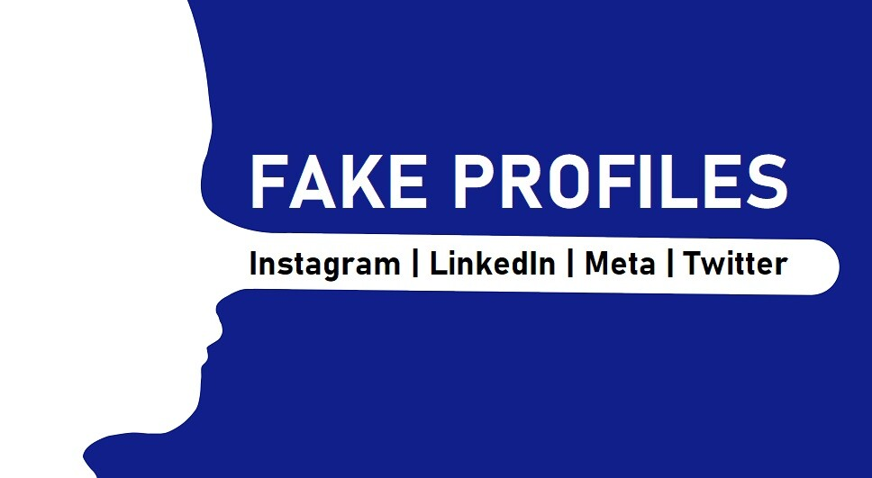

5 February, 2025
Some relevant blogs...
10 tips to identify fake profiles
Why people create fake profiles
24 January, 2025
How to protect yourself from cyberbullying
12 January, 2025
How to spot fake profiles and protect yourself from online.
27 December, 2024

Different types of fake profiles
20 December, 2024
What are the fake profiles
9 December, 2024